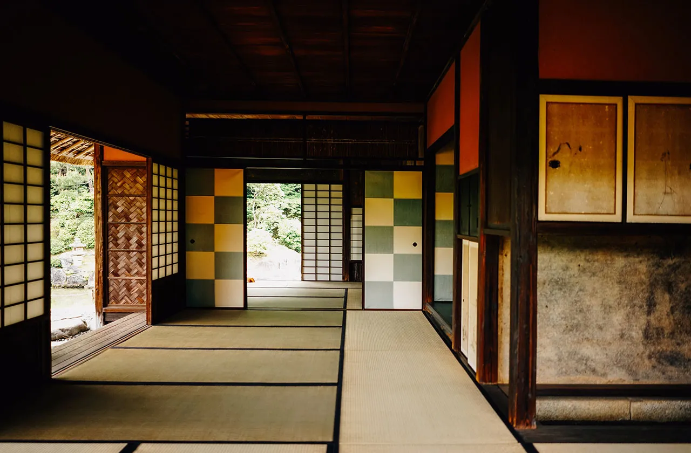

保持資訊更新
日本是一個地震和颱風頻繁的地區，因此在旅行前務必掌握最新的天氣和地震資訊。
您可以通過各種方式獲取這些信息，包括網上天氣預報、地震監測系統以及當地媒體報導。另外，建議您在出發前查看外交部領事事務局全球資訊網的旅遊警示，了解目的地的安全狀況和相關建議。
在日本旅行期間，隨時注意政府發佈的旅遊警示和建議，並遵從當地當局的指示。如果遇到天氣突變或其他緊急情況，請及時聯繫當地的緊急服務和使領館，並採取必要的應對措施。

尊重當地習俗和法律
日本有著悠久歷史和獨特文化，我們作為訪客應該尊重和遵守當地的習俗和法律。
- 日本旅行期間，請遵守當地的禮儀規範，如在進入寺廟或神社時脫鞋，並保持安靜和整潔。
- 尊重日本人的隱私和個人空間，避免無故干擾或打擾他人。
- 瞭解日本的法律和規定，特別是關於吸煙、酒精飲料和毒品使用的法律。切勿從事任何違法活動，以免觸犯當地法律。
- 遵守當地的文化習俗，如在用餐時使用筷子的正確方式，以示尊重和禮貌。
防範小型犯罪
儘管日本被譽為一個安全的旅行目的地，但仍應該保持警惕，防止小型犯罪的發生。
在旅行期間，請特別注意以下幾點：
- 在人群聚集的地方，保護好您的財物，尤其是手機、錢包和護照。
- 避免將貴重物品留在背包外側，以免引起小偷的注意。
- 避免在公共場所展示昂貴的物品，如珠寶、名牌手袋等。
- 盡量保持低調，以免成為犯罪目標。
- 注意身邊的陌生人，不要輕易相信他們提供的幫助或建議。
- 如果有人試圖接近您或顯得可疑，請盡快離開該地區並向當地警察報告。
- 選擇安全可靠的交通工具和住宿地點，並避免夜間獨自行走，尤其是在人煙稀少的地區。 這些是保持您在日本旅行期間安全的基本步驟。請記住這些提示，並隨時保持警惕，以確保您的旅程愉快和安全。